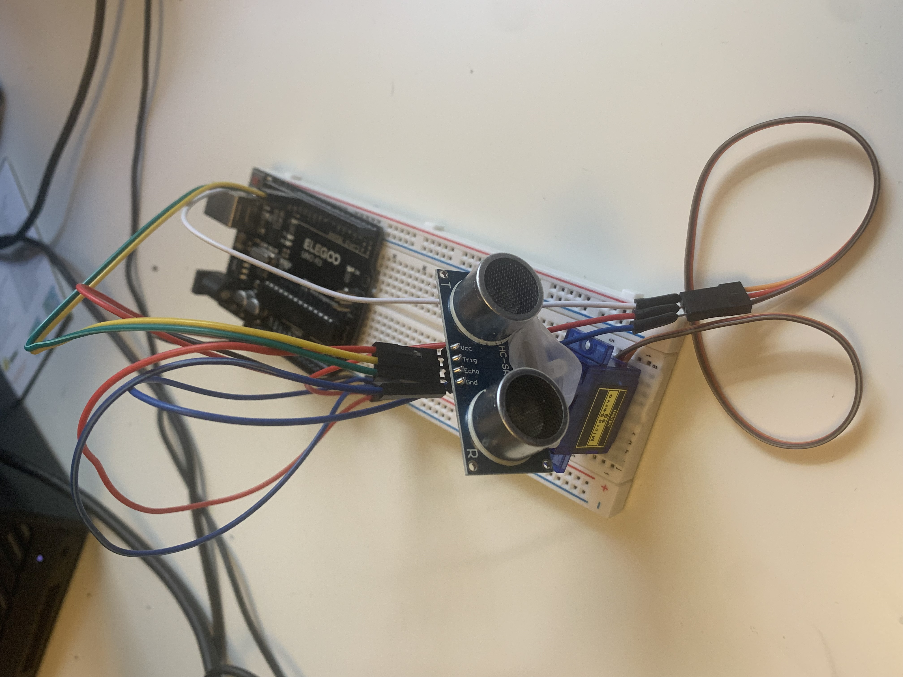

Arduino: Radar Detector
-
Radar Detector Project
- Duration: August 2024
- Description: An Arduino project that uses an ultrasound device to detect moving objects in a specific radar range
- Components: Uno Circuit, Breadboard, Jumper Wires, MicroServo 9g
- Software: Processing 4, Arduino IDE
